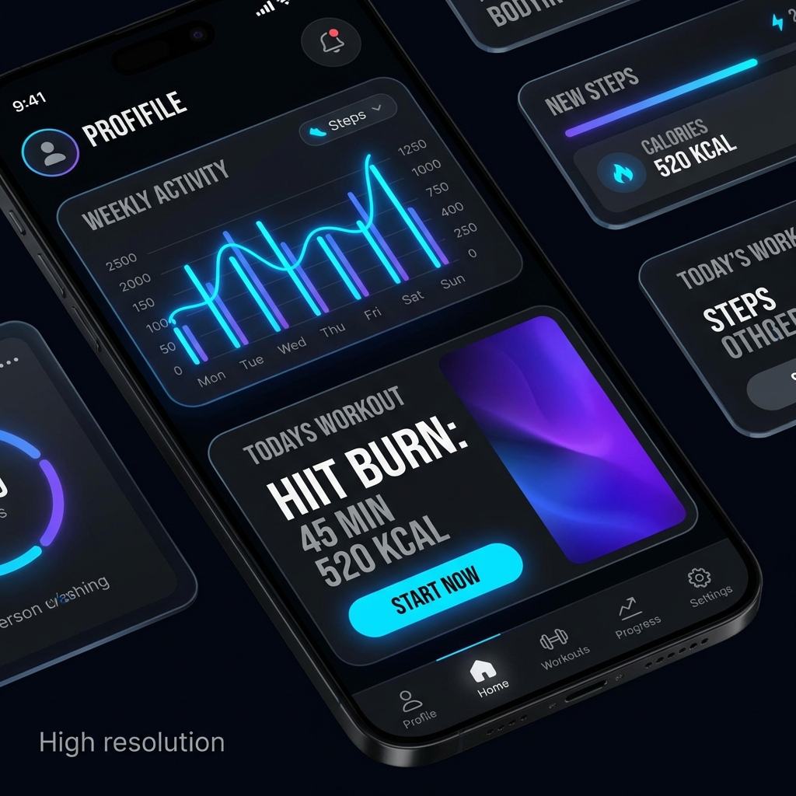
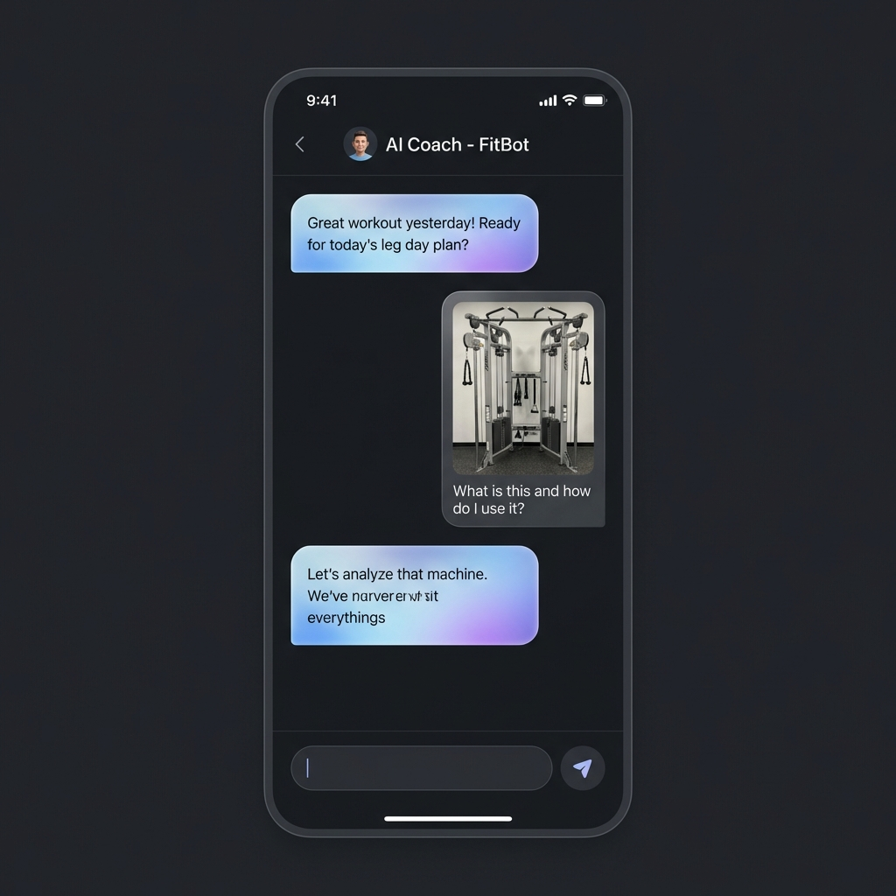

INTELLIGENT
LIFECYCLE
Solving for churn in high-friction fitness environments. A deep dive into the Retention-Adaptive AI architecture of Vyayama.
The $5.1B digital fitness market is plagued by a 65% Month-3 churn rate. Legacy apps offer content; Vyayama offers agency.
Competitive Landscape
While MyFitnessPal (Tracking) and Fitbod (Automation) dominate, they lack real-time adaptability. My research showed that 42% of gym sessions are disrupted by occupied equipment, causing users to abandon their tracking apps.
| Competitor | Strategy | Gap |
|---|---|---|
| MyFitnessPal | Low-friction entry | No coaching depth |
| Fitbod | Algorithmic plan | Rigid equipment dependency |
| Vyayama | JIT Adaptation | Predictive Coaching |
The Problem
High cognitive load during workouts + lack of equipment flexibility = "The Abandonment Loop."
North Star
Target Weekly Plan Completion Rate
THE RICE FRAMEWORK
To maximize ROI on a limited dev cycle, I prioritized based on **Impact vs. Effort**, specifically focusing on features that reduced "Time to Workout."
Reach
High: Mobile-first allows 100% gym-availability.
Impact
XL: Dynamic swapping reduces session abandonment by 40%.
Effort
Medium: Leveraged Agno & Gemini for orchestration.
RICE Score
We prioritized "Just-In-Time" (JIT) generation over pre-set 30-day buckets. Why? Because a user's recovery and equipment availability change daily.

The Progression Hook
Visualizing "The Arch" instead of just "The Day." UI emphasizes the dopamine hit of closing daily streaks.

Modal Multi-Modal AI
User takes a photo of an occupied rack → AI re-routes the workout instantly. This is the Magic Moment that drives LTV.
Technical Product Decision: Memory Persistence
I advocated for a backend architecture that stores chat sessions using JSON session history. This allows the AI to "remember" previous injuries or preferences (e.g., "I hate squats"), creating a switching cost for the user that increases stickiness.
Acquisition: The "Aha!" Loop
Targeting "Intermediate Plateaus"—users who know *how* to lift but have stopped seeing results. Strategy: Partner with niche fitness influencers to demonstrate the Alternative Swap feature in busy commercial gyms.
Viral Hook
Shareable "AI Plan Summary" cards optimized for IG Stories.
LTV Scaling
Freemium model with AI Voice Coaching as the Tier 2 upgrade.
Building the "Health Operating System."
V2: Wearable Sync
Real-time HR data to adjust rest periods automatically.
V3: Dietary Layer
Generative meal plans that sync with calorie burn data.
V4: Social Clubs
Hyper-local AI-matched gym buddy system.